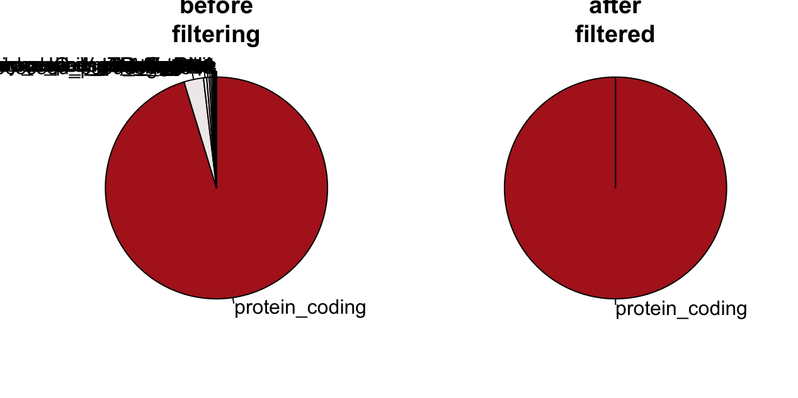
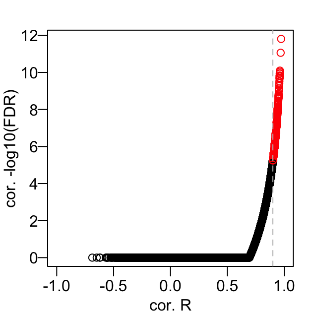
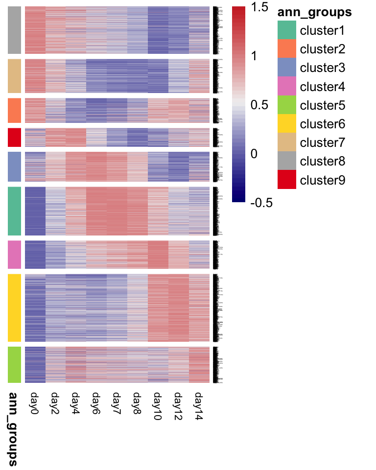
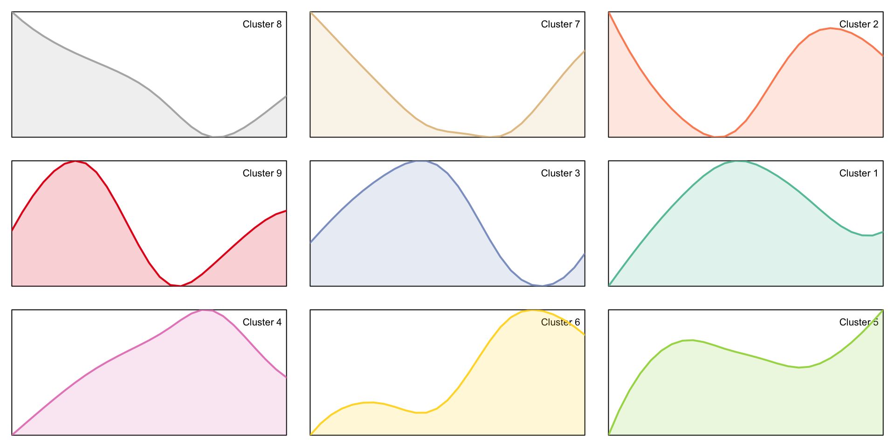
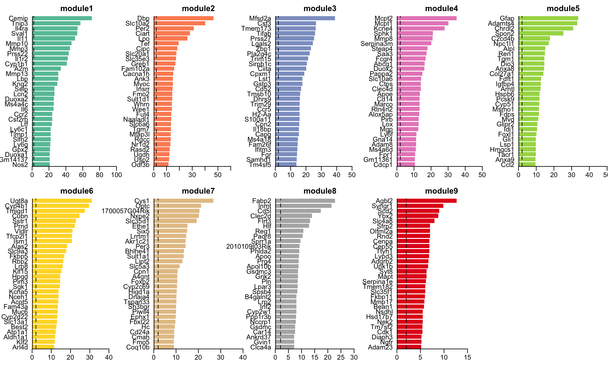
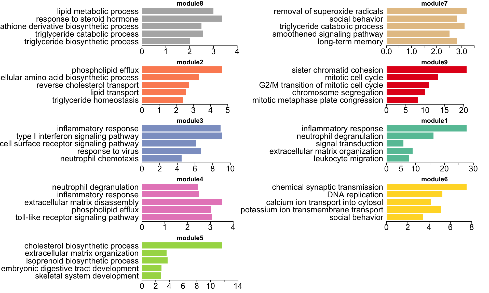
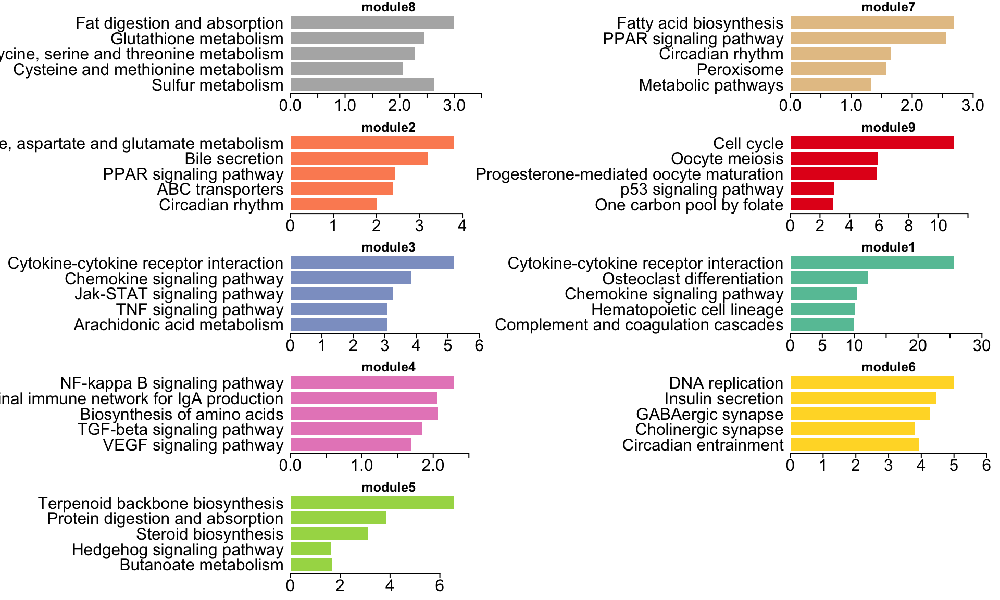

RNAseq mouse DSS colitis
Czarnewski et al 2019
Paulo Czarnewski
30 May 2019
1 Loading packages and data
source("./support_functions.R")
inst_packages(c("readxl","data.table","preprocessCore","biomaRt","riverplot","sva","RColorBrewer","rafalib","edgeR","EDASeq","RUVSeq","pheatmap","enrichR","GOsummaries"))## Warning: package 'Rcpp' was built under R version 3.5.2## Pkg_Status
## readxl TRUE
## data.table TRUE
## preprocessCore TRUE
## biomaRt TRUE
## riverplot TRUE
## sva TRUE
## RColorBrewer TRUE
## rafalib TRUE
## edgeR TRUE
## EDASeq TRUE
## RUVSeq TRUE
## pheatmap TRUE
## enrichR TRUE
## GOsummaries TRUE2 Loading the count and metadata
#Load phenotypic data
phenoData <- read_excel("../data/metadata_mouse.xlsx",col_names=TRUE)
phenoData <- data.frame(phenoData, row.names = phenoData$SampleName)
#Load gene expression table and change the sampleIDs to the respective sample names
RawData <- read.csv("../data/kallisto_counts_mouse.csv",row.names = 1)
colnames(RawData) <- phenoData$SampleName[ match(colnames(RawData), phenoData$SampleID) ]
dim(RawData)## [1] 30246 26head(RawData)## DSSd00_1 DSSd00_2 DSSd00_3 DSSd02_1 DSSd02_2 DSSd02_3
## 0610007P14Rik 795 732 830 902 881 826
## 0610009B22Rik 233 248 250 244 186 218
## 0610009L18Rik 43 43 49 44 55 48
## 0610009O20Rik 923 909 907 860 1106 764
## 0610010F05Rik 251 165 221 231 217 235
## 0610010K14Rik 504 426 480 475 577 429
## DSSd04_1 DSSd04_2 DSSd04_3 DSSd06_1 DSSd06_2 DSSd06_3
## 0610007P14Rik 949 918 1034 1040 1222 1100
## 0610009B22Rik 274 254 271 295 324 245
## 0610009L18Rik 58 55 44 33 38 50
## 0610009O20Rik 965 1062 934 744 917 1039
## 0610010F05Rik 230 194 244 347 230 274
## 0610010K14Rik 670 597 528 446 604 568
## DSSd07_1 DSSd07_2 DSSd07_3 DSSd08_1 DSSd08_2 DSSd08_3
## 0610007P14Rik 862 1199 964 902 1348 1321
## 0610009B22Rik 292 308 314 288 392 407
## 0610009L18Rik 31 37 30 38 79 100
## 0610009O20Rik 740 915 785 664 1051 1417
## 0610010F05Rik 260 239 368 307 342 324
## 0610010K14Rik 483 496 454 363 604 674
## DSSd10_2 DSSd10_3 DSSd12_1 DSSd12_2 DSSd12_3 DSSd14_1
## 0610007P14Rik 1686 1335 1404 1527 1547 1542
## 0610009B22Rik 508 430 392 419 423 377
## 0610009L18Rik 60 58 60 63 58 80
## 0610009O20Rik 970 1074 1030 970 914 1330
## 0610010F05Rik 407 454 323 393 272 345
## 0610010K14Rik 1063 948 688 635 666 643
## DSSd14_2 DSSd14_3
## 0610007P14Rik 1192 1410
## 0610009B22Rik 402 428
## 0610009L18Rik 50 66
## 0610009O20Rik 1035 1026
## 0610010F05Rik 363 343
## 0610010K14Rik 609 5883 Filter genes based on the counts and biotype
#Filter out genes expressed in 10% of the samples (with the number of reads above the threshold of 5). Next, sort the gene names in alphabetical order.
filter <- apply(RawData,1,function(x) sum( x >= 5 ) >= round(ncol(RawData)*.1) )
RawData <- RawData[filter,]
dim(RawData)## [1] 17461 26#Filter out mitocondrial genes or those that do NOT belong to "protein-coding" or "long non-coding RNA"
RawData <- RawData[grep("mt-",rownames(RawData),invert = T),]
#Filter out gene that do NOT belong to "protein-coding"
ensembl <- useMart("ensembl", dataset="mmusculus_gene_ensembl")
#listAttributes(ensembl)$name[grep("typ",listAttributes(ensembl)$name)]
annot <- getBM(c("mgi_symbol","gene_biotype","transcript_biotype"), mart=ensembl)
mypar(1,2)
gene_biotype <- sort(table(annot[annot[,1] %in% rownames(RawData),2])/dim(RawData)[1]*100,decreasing = T)
pie(gene_biotype,clockwise = T,main = "before\nfiltering",col = colorRampPalette(c("grey95","firebrick"))((max(round(gene_biotype,0))+1))[round(gene_biotype,0)+1])
select <- annot[(annot[,2] %in% c("protein_coding")) & (annot[,3] %in% c("protein_coding")),]
RawData <- RawData[select[select[,1] %in% rownames(RawData),1],]
gene_biotype_filtered <- sort(table(select[select[,1] %in% rownames(RawData),2])/dim(RawData)[1]*100,decreasing = T)
pie(gene_biotype_filtered,clockwise = T,main = "after\nfiltered",col = colorRampPalette(c("grey95","firebrick"))((max(round(gene_biotype_filtered,0))+1))[round(gene_biotype_filtered,0)+1])
RawData <- RawData[order(rownames(RawData)),]
dim(RawData)## [1] 15548 26#Create expression set
set <- newSeqExpressionSet(round(as.matrix(RawData),0),phenoData = phenoData)
set <- betweenLaneNormalization(set, which="upper")
Group <- factor(pData(set)$Group)4 Finding genes that correlate well to library sizes
Since the expected number of cells and the tissue composition is expected to change during mouse colitis, where higher number of cells and thus also ‘housekeeping’ genes. We correlated each gene log expression with the library sizes. Below we visalize commonly used ‘housekeeping’ genes.
mypar(5,6)
library.size <- log2(colSums(counts(set)))
for(i in c("Rpl37","Slc25a3","Actb","Nme4","Pnp","Pole4","Prdx3","Cpped1","Hprt","Gapdh","Cd63","Trappc3")){
plot(log2(counts(set)+1)[i,],library.size,main=paste(i,round(cor(log2(counts(set)+1)[i,],library.size),2)),col=paste0(colorRampPalette(c("grey60",2,3))(10),"90")[factor(pData(set)$Day)],pch=16,las=1,xlab="log(counts+1)",ylab="library size")
model <- lm(library.size~log2(counts(set)+1)[i,])
abline(model,col="red")
plot(pData(set)$Day+rnorm(length(Group))/10,log2(counts(set)+1)[i,],main=i,col=paste0(colorRampPalette(c("grey60",2,3))(10),"90")[factor(pData(set)$Day)],pch=16,xlab="days",ylab="log(counts+1)",las=1)
points(smooth.spline(log2(counts(set)+1)[i,],x = as.numeric(pData(set)$Day),spar = .4),pch=16)
lines(smooth.spline(log2(counts(set)+1)[i,],x = as.numeric(pData(set)$Day),spar = .4),lwd=2)
}
5 Plot gene correlation to library sizes
#Identifying genes that are highly correlated to the total sample counts (housekeeping)
mypar(1,1)
a <- apply(log2(counts(set)+1),1,function(x){ cor.test(x,library.size)$p.value })
b <- apply(log2(counts(set)+1),1,function(x){ cor(x,library.size) })
plot(b,-log10(p.adjust(a)),col=ifelse(b > .9,"red","black"),xlab="cor. R",ylab="cor. -log10(FDR)",xlim=c(-1,1),las=1)
abline(v=.9,lty=2,col="grey")
housekeeping <- na.omit(names(b)[b > .9])6 Estimating unwanted variation from ‘housekeeping’ genes using RUVseq
k <- 2
set1 <- RUVg(set, housekeeping, k=k)
design <- model.matrix(~ Group + W_1 + W_2 , data=pData(set1))7 Computing differentilaly expressed genes using EdgeR
y <- DGEList(counts=counts(set1), group=Group,remove.zeros = T)
y <- calcNormFactors(y,method = "TMM")
y <- estimateGLMCommonDisp(y,design)
y <- estimateGLMTagwiseDisp(y,design)
fit <- glmFit(y, design)
lrt <- glmLRT(fit,coef = 2:length(unique(Group)))
top <- topTags(lrt,adjust.method = "BH",n = "all",sort.by = "p.value")[[1]]
colnames(top) <- sub("Groupday","d",colnames(top))
normcounts <- cpm(y, log = T, prior.count = 1, normalized.lib.sizes = T)
mypar(2,3)
plotBCV(y,ylim=c(0,0.8),yaxs="i",las=1,xlim=c(-3,13),ylab="BCV")
hist(top$PValue,las=1,col=c("orange",rep("grey",19)),breaks=20,main="hist. p.values",xlab="p-values")
hist(top$FDR,las=1,col=c("orange",rep("grey",19)),breaks=20,main="hist. FDR",xlab="FDR")
plot(top$logCPM,rowMeans(top[,grep("logFC",colnames(top))]),ylim=c(-8,8),xlim=c(-3,13),pch=16,cex=.3,xaxs="i",yaxs="i",las=1,ylab="logFC",xlab="Average logCPM")
abline(h=c(-.6,.6),col="red",lwd=2)
plot(top$logCPM,-log10(top$FDR),ylim=c(0,40),xlim=c(-3,13),pch=16,cex=.3,xaxs="i",yaxs="i",las=1,ylab="-log10(FDR)",xlab="Average logCPM")
8 Define differentially expressed genes
Genes with effect size above 1.5 (fold change) and p-value below 0.05 were considered significant.
#Define the filter for logFC
logFCthreshold <- log(1.5,2)
logFCfilter <- apply(top[,grep("logFC",colnames(top))],1,function(x){ sum( abs(x) > logFCthreshold) >= 1 })
#Define filter for FDR value
FDRthreshhold <- 0.05
FDRfilter <- top$FDR < FDRthreshhold
DEgenes <- top[logFCfilter & FDRfilter,]
dim(DEgenes)## [1] 4052 12Since we used the gene annotation from BiomaRt in our code, it is likely that the list of differentially expressed genes might slightly vary depending on the updates in the ENSEMBL database. For this reason, we also provided the list of genes obtained during our initial anlaysis in order to produce the exact same figures in the paper.
9 Generate smoothed spline curves from logFC
## day0 day2 day4 day6 day7 day8
## Cemip 0 3.0779982 4.366889 4.225461 3.888813 3.6922386
## Tnip3 0 1.2348267 2.094637 2.321897 2.099902 1.7907515
## Il4ra 0 0.6961859 1.099834 1.257684 1.240850 1.1996463
## Sval1 0 1.4805853 2.706716 3.945460 4.260956 4.2742010
## Il11 0 2.5413861 4.118835 3.937419 3.415253 2.9343722
## Mmp10 0 4.2182238 6.191293 6.246181 5.826703 5.3832417
## Dbp 0 -1.1658492 -2.164294 -2.751143 -2.562875 -2.1684003
## Mmp3 0 3.7412050 5.520860 5.235452 4.706497 4.3273487
## Prss22 0 5.1496985 7.655787 7.842884 7.465211 7.1108333
## Il1r2 0 0.5832888 1.170549 1.495866 1.516160 1.5722848
## Cyp1b1 0 2.0242666 3.191435 2.974096 2.606478 2.3335163
## Slc10a2 0 -0.7287538 -1.385210 -1.738525 -1.594440 -1.2022275
## Mfsd2a 0 1.3577047 1.983496 1.737624 1.241024 0.6713841
## Mcpt2 0 2.5370586 4.971954 6.759260 7.054086 6.9086961
## A2m 0 1.9145906 4.300156 5.805300 5.682372 5.2921135
## Gfap 0 1.3307718 1.662421 1.291421 1.099654 1.0592388
## Adamts4 0 2.1522939 3.240531 3.316848 3.264167 3.3130293
## Per2 0 -1.6359994 -2.115514 -1.616810 -1.180921 -0.7626990
## Mmp13 0 1.3011904 2.313554 2.526573 2.349789 2.2051570
## Ugt8a 0 -0.4890740 -1.011514 -1.468022 -1.321777 -0.8407362
## day10 day12 day14
## Cemip 4.0547454 3.24727105 1.68025356
## Tnip3 1.3443693 0.62583383 -0.41123982
## Il4ra 1.1379543 0.81532375 0.48317964
## Sval1 3.7019588 3.08210844 2.38123989
## Il11 2.5484008 1.06123432 -0.84669005
## Mmp10 4.9323109 3.72458314 2.08024768
## Dbp -1.6471719 -1.55968538 -1.49101471
## Mmp3 4.4843978 3.12154677 1.38859800
## Prss22 6.7991731 5.55622689 3.07236811
## Il1r2 1.6626372 0.48842788 -0.50146875
## Cyp1b1 2.4600380 1.67036174 0.53295321
## Slc10a2 -0.2887355 -0.01720233 -0.34058443
## Mfsd2a 0.2252055 0.09055074 -0.07347944
## Mcpt2 6.1306577 5.96668828 5.57377212
## A2m 4.9313544 3.74126385 2.34390048
## Gfap 1.4588069 1.37385519 0.98040944
## Adamts4 3.7204809 3.18994732 2.46199571
## Per2 -0.3584922 -0.54858932 -0.85900201
## Mmp13 2.1993024 1.41175953 0.66067497
## Ugt8a 0.3052664 0.58970326 -0.01040942## day0 day2 day4 day6 day7 day8 day10
## Cemip 0 3.0779982 4.366889 4.225461 3.888813 3.692239 4.054745
## Tnip3 0 1.2348267 2.094637 2.321897 2.099902 1.790752 1.344369
## Il4ra 0 0.6961859 1.099834 1.257684 1.240850 1.199646 1.137954
## Sval1 0 1.4805853 2.706716 3.945460 4.260956 4.274201 3.701959
## Il11 0 2.5413861 4.118835 3.937419 3.415253 2.934372 2.548401
## Mmp10 0 4.2182238 6.191293 6.246181 5.826703 5.383242 4.932311
## day12 day14
## Cemip 3.2472710 1.6802536
## Tnip3 0.6258338 -0.4112398
## Il4ra 0.8153237 0.4831796
## Sval1 3.0821084 2.3812399
## Il11 1.0612343 -0.8466901
## Mmp10 3.7245831 2.0802477## day0 day2 day4 day6 day7 day8
## Cemip 0.0000000 0.7048492 1.0000000 0.9676135 0.8905225 0.8455078
## Tnip3 0.1504644 0.6022627 0.9168500 1.0000000 0.9187765 0.8056644
## Il4ra 0.0000000 0.5535458 0.8744914 1.0000000 0.9866144 0.9538533
## Sval1 0.0000000 0.3464005 0.6332684 0.9230871 0.9969012 1.0000000
## Il11 0.1705137 0.6823198 1.0000000 0.9634649 0.8583066 0.7614628
## Mmp10 0.0000000 0.6753285 0.9912125 1.0000000 0.9328426 0.8618453
## day10 day12 day14
## Cemip 0.9285204 0.7436120 0.3847713
## Tnip3 0.6423421 0.3794444 0.0000000
## Il4ra 0.9048013 0.6482738 0.3841820
## Sval1 0.8661172 0.7210958 0.5571193
## Il11 0.6837325 0.3842342 0.0000000
## Mmp10 0.7896523 0.5962977 0.333043110 Perform hierachical clustering on the data
mypallete2 <- c(brewer.pal(n = 8,name = "Set2"),brewer.pal(n = 9,name = "Set1"))
geneDistance <- as.dist((1 - cor(t( n_s_logFC ))^3)/2)
geneCluster = hclust(geneDistance,method="ward.D2")
par(mar=c(4,4,4,4),mfrow=c(1,1))
height_cut <- 4.5
groups <- cutree(geneCluster,h=height_cut)
unique(groups)## [1] 1 2 3 4 5 6 7 8 9myplclust(geneCluster, labels=groups, lab.col=mypallete2[as.numeric(groups)])
abline( h=height_cut, col="red", lwd=0.5)
#Re-order clusters based on their respective temporal peak of expression
peak_order <- c()
for (i in unique(groups)){
avg_curve <- as.numeric(colMeans(s_logFC[groups==i,]))
names(avg_curve) <- as.numeric(sub("day","",colnames(s_logFC)))
avg_curve <- as.numeric(names(sort(avg_curve,decreasing = T)))
peak_order <- rbind(peak_order,c(
avg_curve[1], avg_curve[2], avg_curve[3], avg_curve[4]))}
peak_order <- data.frame(peak_order,row.names = unique(groups))
peak_order <- peak_order[order( rowSums(peak_order[,1:4]!=0),peak_order[,1], peak_order[,2],peak_order[,3],peak_order[,4]),]
group_order <- cbind("peak_order"=as.numeric(rownames(peak_order)),"groups"=unique(groups))11 Plot heatmaps using Z-score nomalized clustered data
ann_groups <- data.frame(ann_groups=paste0("cluster",groups),row.names=names(groups))
tag_colors <- mypallete2[1:max(groups)]; names(tag_colors) <- unique(ann_groups)[[1]]
pheatmap(n_s_logFC[order(order(as.numeric(group_order[,1]))[groups]),], cluster_rows=F,cluster_cols=FALSE, scale="none", fontsize_row=1, fontsize_col=8, col= colorRampPalette(c("navy","grey95", "firebrick3"))(50), treeheight_row = 100,annotation_row = as.data.frame(ann_groups), annotation_colors = list(ann_groups = tag_colors),border_color = NA,height = 8,width = 6,gaps_row = sort(rep(cumsum(table(groups)[as.numeric(group_order[,1])]),1)),breaks = seq(-.5,1.5,length.out = 50))
12 Plot cluster means
par(mar=c(1,1,1,1),mfrow=c(3,3))
for (i in as.numeric(group_order[,1])){
#cluster_data <- dataset_norm[groups==i,]
#avg_curve <- smooth.spline(pData(set)$Day, colMeans(cluster_data)-mean(colMeans(cluster_data)[pData(set)$Day==0]), spar=0.3)
#avg_curve <- list(y=colMeans(n_s_logFC[groups==i,]))
avg_curve <- spline(x = as.numeric(sub("day","",colnames(n_s_logFC))),y=colMeans(n_s_logFC[groups==i,]))
#avg_curve$x <- as.numeric(sub("day","",colnames(n_s_logFC)))
plot(2,2,xlim=c(0,14),ylim=c(min(avg_curve$y/max(abs(avg_curve$y))), max(avg_curve$y/max(abs(avg_curve$y))) ),type = "n",ylab = "expression\nlevel",xlab=" ",cex.lab=1,yaxt="n",xaxt="n",yaxs="i",xaxs="i")
legend("topright", paste0("Cluster ",i), bty="n")
lines(avg_curve$x, avg_curve$y/max(abs(avg_curve$y)), col=mypallete2[i], lwd=2)
polygon(c(0,avg_curve$x,14),c(min(avg_curve$y/max(abs(avg_curve$y))),avg_curve$y/max(abs(avg_curve$y)),min(avg_curve$y/max(abs(avg_curve$y)))),col = paste0(colorRampPalette(mypallete2[i])(1),30),border = NA)
}
13 Plotting the top 30 most significant genes for each cluster, sorted by p-value
pallete2 <- c(brewer.pal(8,"Set2"),brewer.pal(9,"Set1"))
n <- 30
mypar(2,5,mar=c(2,4,2,0))
for(i in 1:max(groups)){
temp <- rownames(DEgenes)[groups == i]
top_clust <- -log(sort(as.matrix(DEgenes)[temp,"FDR"]),10)[1:n]
barplot(top_clust[n:1],horiz=T,xaxs="i",yaxs="i",border=NA,las=1,col=pallete2[i],xlim=c(0,max(top_clust[n:1])*1.5),main=paste0("module",i))
abline(v=0,lwd=2);abline(v=2,lty=2)}
14 Idetifying leading genes responsible for changes in Principal components
#PERFORM PCA ON DEgenes AND CACLULATE %VARIANCE EXPLAINED
pca = prcomp(t(normcounts[rownames(DEgenes),]))
percent <- pca$sdev^2/sum(pca$sdev^2)*100
labs <- sapply(seq_along(percent), function(i) {paste("PC ", i, " (", round(percent[i], 1), "%)", sep="")})
#PLOT VARIANCE EXPLAINED USING BARPLOTS AND PIE CHART
par(mar=c(6,4,4,2),mfrow=c(1,3))
barplot(percent,names.arg=colnames(pca$x),las=2,xaxs="i",ylim=c(0,round(max(percent)*1.2,0)),ylab="% variance explained",main = "Variance explained by\neach Principal Component",col=colorRampPalette(c("grey85","red"))(max(round(percent,0))*1.5)[round(percent,0)+1],xpd=F,border=NA)
abline(h=c(0,5),lty=c(1,2),lwd=c(3,1))
pie(percent,labels = colnames(pca$x),col = colorRampPalette(c("grey85","Red"))(max(round(percent,0))*1.5)[round(percent,0)+1],clockwise = T,border = "white",main = "Variance explained by\neach Principal Component")
#PLOT PRINCIPAL COMPONENTS
pca$x <- scale(pca$x, center=T,scale = T)
plot(pca$x[,1], pca$x[,2], xlab=labs[1], ylab=labs[2], las=1, xlim=c(-1.9,2.2), ylim=c(-2.3,2.5), cex.main=0.8,main="",type="n")
points(pca$x[,1], pca$x[,2], pch=20, cex=4, col=paste0(colorRampPalette(c("grey60",2,3))(length(unique(pData(set)$Day))),"95")[factor(pData(set)$Day)])
sx <- spline(smooth.spline(1:nrow(pca$x), pca$x[,1],spar = 0.4,tol=2))
sy <- spline(smooth.spline(1:nrow(pca$x), pca$x[,2],spar = 0.4,tol=2))
lines(sx[[2]], sy[[2]], col = 2, lwd = 2)
text(pca$x[,1], pca$x[,2], pData(set)$Day, pch=20, cex=1, col="black",tck=-.05)
#plotPCA(set, labels=FALSE, bg=pData(set)$Color, cex=2, main=paste0("PCA"),xlim=c(-0.6,0.6),ylim=c(-0.6,0.6),las=1,cex.main=0.8,pch=21)
#------------------------------------------------------------------------------15 Plot Principal components relative to the days of DSS
par(mar=c(2,2,2,1),mfrow=c(2,3))
for (i in 1:6){
plot(pData(set)$Day,pca$x[,i],bg="grey",pch=21,ylim=c(-3,3),main=labs[i],xlab="",ylab="",xaxt="n",las=1)
myline <- smooth.spline(pData(set)$Day,pca$x[,i], spar=0.4)$y
lines(unique(pData(set)$Day),myline,col="blue",lwd=3)
abline(h=c(mean(pca$x[pData(set)$Day==0,i])),col="red")
}; mypar()
#Identify the gene loads that contribute to a specific PC
leading <- pca$rotation
par(mar=c(2,10,2,0),mfrow=c(1,5))
for (i in 1:5){
#rownames(head(leading[order(abs(leading[,1]), decreasing = T),],50)) #plot the leading scores for each gene for the # PC
x <- abs(leading[,i])[order(abs(leading[,i]), decreasing = T)]
#model <- lm( c(x[round(length(x)/10):round(length(x)*4/10)]) ~ c(round(length(x)/10):round(length(x)*4/10)) )
#model$coefficients[1]
#plot(1:length(x),x, las=2); abline(h=model$coefficients[1],v=c(round(length(x)/10),round(length(x)*4/10)))
#barplot(x[20:1],las=1,horiz=T,col=colorRampPalette(c("grey95","grey95","firebrick3"))(round((max(x[20:1])-min(x))*1000,0)+1)[round((x[20:1]-min(x))*1000)+1],main=paste0("PC",i),xlim=c(0,max(x[40:1]*1.2)),line=0,border=F)
barplot(x[30:1],las=1,horiz=T,col=mypallete2[groups[names(x[30:1])]],main=paste0("PC",i),xlim=c(0,max(x[40:1]*1.2)),border=F,cex.axis=1.5,cex.names=1.5,xaxs="i",yaxs="i")
abline(v=0,lwd=2)
}
16 Identify which gene modules impact th most in the variance for each Principal Component
cluster_contribution <- c()
for(i in 1:max(groups)){
for(j in 1:ncol(pca$x)){
cluster_contribution <- c(cluster_contribution, sum(abs(leading)[rownames(DEgenes)[groups==i],j]*percent[j] ))}}
cluster_contribution_matrix <- matrix(cluster_contribution, nrow=ncol(pca$x), dimnames = list(c(paste0("PC",ifelse(1:ncol(pca$x)<=9,"0",""),1:ncol(pca$x))),c(paste0("Cluster",ifelse(1:max(groups)<=9,"0",""),1:max(groups)))))
top_PCs <- 5
#Creating visualization plot Sankey Diagram
a <- sort(colSums(cluster_contribution_matrix[1:top_PCs,]))
a2 <- sort(cumsum(a/sum(a)),decreasing = T)
b <- sort(rowSums(cluster_contribution_matrix[1:top_PCs,]))
b2 <- sort(cumsum(b/sum(b)),decreasing = T)
nodes = data.frame(ID = c(names(b2), names(a2)), stringsAsFactors = FALSE)
nodes$x = c(rep(2,length(b)),rep(1,length(a)))
nodes$y = c((b2+c(b2[2:length(b2)],0))/2 , (a2+c(a2[2:length(a2)],0))/2)
rownames(nodes) = c(names(b2), names(a2))
edges <- data.frame(N1 = rownames(cluster_contribution_matrix[1:top_PCs,]),
N2 = sort(rep(colnames(cluster_contribution_matrix[1:top_PCs,]),top_PCs)),
Value = c(cluster_contribution_matrix[1:top_PCs,]) /sum(c(cluster_contribution_matrix[1:top_PCs,])))
edges <- edges[order(edges[,3]),]
palette = c(paste0(brewer.pal(9, "Set1"), "60"), paste0(brewer.pal(8, "Set2"), "60") )
palette = paste0(colorRampPalette(c("grey85","red"))(101),"60")
styles <- lapply(nodes$y[1:top_PCs], function(n) {
list(col = palette[(n*10)^2+1],lty = 0, textcol = "black",srt=0)
})
styles <- c( styles, lapply(as.numeric(sub("Cluster","",names(a2))), function(n) {
list(col = mypallete2[n],lty = 0, textcol = "black",srt=0)
}))
names(styles) = nodes$ID
rp <- list(nodes = nodes, edges = edges, styles = styles)
class(rp) <- c(class(rp), "riverplot")
mypar()
plot(rp, plot_area = 0.95, yscale=0.95,line=1)
17 GO and KEGG enrichment using EnrichR for each cluster (v. 2016)
# define variables
wc_go = list()
wc_kegg = list()
wc_TF = list()
pvalue_cutoff <- 0.05
no_genes_cutoff <- 3
for (i in sort(unique(groups))) {
cluster_genes <- rownames(DEgenes)[groups == i]
a <- enrichr(genes = cluster_genes, databases = "GO_Biological_Process_2017")[[1]]
a <- a[order(a$Combined.Score, decreasing = T), ]
# remove terms with p-values > pvalue_cutoff and number of genes <
# no_genes_cutoff
a <- a[a$P.value < pvalue_cutoff & as.numeric(sapply(strsplit(a[, "Overlap"],
"/"), "[[", 1)) >= no_genes_cutoff, ]
# remove terms with 'positive/negative regulation'
a <- a[grep("regulation", a$Term, invert = T), ]
if (nrow(a) > 20) {
a <- a[order(a$Combined.Score, decreasing = T), ][1:20, ]
}
wc_go[[paste0("Cluster", i)]] <- data.frame(Term = sapply(strsplit(a[, "Term"],
" [(]GO:"), "[[", 1), Score = a$P.value)
b <- enrichr(genes = cluster_genes, databases = "KEGG_2016")[[1]]
b <- b[order(b$Combined.Score, decreasing = T), ]
b <- b[grep("_hsa05", b$Term, invert = T), ] #Remove disease-related KEGG pathways ('hsa05'')
b <- b[b$P.value < pvalue_cutoff & as.numeric(sapply(strsplit(b[, "Overlap"],
"/"), "[[", 1)) >= no_genes_cutoff, ]
if (nrow(b) > 20) {
b <- b[order(b$Combined.Score, decreasing = T), ][1:20, ]
}
wc_kegg[[paste0("Cluster", i)]] <- data.frame(Term = sapply(strsplit(b[,
"Term"], "_"), "[[", 1), Score = b$P.value)
}
gs_go = gosummaries(wc_data = wc_go[paste0("Cluster", group_order[, 1])], wc_algorithm = "top",
score_type = "p-value")
gs_kegg = gosummaries(wc_data = wc_kegg[paste0("Cluster", group_order[, 1])],
wc_algorithm = "top", score_type = "p-value")## Uploading data to Enrichr... Done.
## Querying GO_Biological_Process_2017... Done.
## Parsing results... Done.
## Uploading data to Enrichr... Done.
## Querying KEGG_2016... Done.
## Parsing results... Done.
## Uploading data to Enrichr... Done.
## Querying GO_Biological_Process_2017... Done.
## Parsing results... Done.
## Uploading data to Enrichr... Done.
## Querying KEGG_2016... Done.
## Parsing results... Done.
## Uploading data to Enrichr... Done.
## Querying GO_Biological_Process_2017... Done.
## Parsing results... Done.
## Uploading data to Enrichr... Done.
## Querying KEGG_2016... Done.
## Parsing results... Done.
## Uploading data to Enrichr... Done.
## Querying GO_Biological_Process_2017... Done.
## Parsing results... Done.
## Uploading data to Enrichr... Done.
## Querying KEGG_2016... Done.
## Parsing results... Done.
## Uploading data to Enrichr... Done.
## Querying GO_Biological_Process_2017... Done.
## Parsing results... Done.
## Uploading data to Enrichr... Done.
## Querying KEGG_2016... Done.
## Parsing results... Done.
## Uploading data to Enrichr... Done.
## Querying GO_Biological_Process_2017... Done.
## Parsing results... Done.
## Uploading data to Enrichr... Done.
## Querying KEGG_2016... Done.
## Parsing results... Done.
## Uploading data to Enrichr... Done.
## Querying GO_Biological_Process_2017... Done.
## Parsing results... Done.
## Uploading data to Enrichr... Done.
## Querying KEGG_2016... Done.
## Parsing results... Done.
## Uploading data to Enrichr... Done.
## Querying GO_Biological_Process_2017... Done.
## Parsing results... Done.
## Uploading data to Enrichr... Done.
## Querying KEGG_2016... Done.
## Parsing results... Done.
## Uploading data to Enrichr... Done.
## Querying GO_Biological_Process_2017... Done.
## Parsing results... Done.
## Uploading data to Enrichr... Done.
## Querying KEGG_2016... Done.
## Parsing results... Done.18 Plotting enrichment for each cluster
message("GO enrichment")## GO enrichmentmypar(mar=c(2,22,1,1),mfrow=c(5,2))
for (i in as.numeric(group_order[,1])){
if(dim(wc_go[[i]])[1]<5){n <- dim(wc_go[[i]])[1]}else{n<-5}
barplot(-log(wc_go[[i]][n:1,2],10),names.arg=wc_go[[i]][n:1,1],horiz=T,las=1,col=mypallete2[i], main=paste0("module",i),xlab=" ",xlim=c(0,max(-log(wc_go[[i]][n:1,2],10))*1.2),tck=-.05,border=NA,cex.axis=1.5,cex.names=1.5)
}
message("KEGG enrichment")## KEGG enrichmentmypar(mar=c(2,22,1,1),mfrow=c(5,2))
for (i in as.numeric(group_order[,1])){
if(dim(wc_kegg[[i]])[1]<5){n <- dim(wc_kegg[[i]])[1]}else{n<-5}
barplot(-log(wc_kegg[[i]][n:1,2],10),names.arg=wc_kegg[[i]][n:1,1],horiz=T,las=1,col=mypallete2[i],main=paste0("module",i),xlab=" ",xlim=c(0,max(-log(wc_kegg[[i]][n:1,2],10))*1.2),tck=-.05,border=NA,cex.axis=1.5,cex.names=1.5)
}